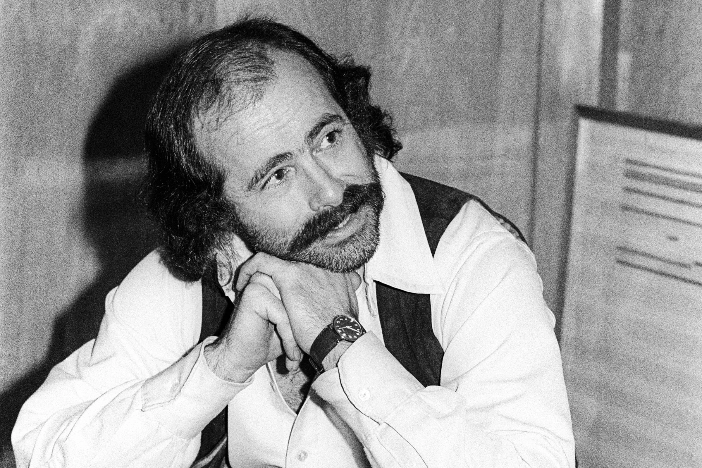
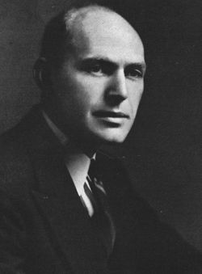
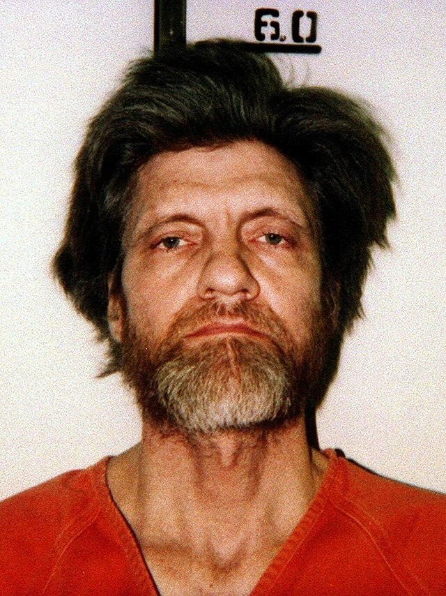

Project MKUltra was a covert CIA program conducted during the Cold War era, tracing back to the 50's. Driven on concerns of mind controll, interrogation techniques, and chemical manipulation, the project aimed to explore methods of influencing human behavior, often through unethical experiments such as drugs, hypnosis, and psychological torture.
The experiments were covered in secrecy sand controversy. Researchers subjected unwitting victims -such as prisoners, mental patients, or military personal- with mind altering substances such as LSD to try and create "Manchurian candidates" who could be controlled. These unethical experiments remain a heated topic of debate due to the violation of basic human rights and consent.
Despite its discovery and termination happening in the 1970s, it has left an impact on society such as revealing the dangers of unregulated government experimentation. The legacy of this event serves as a warning, reminding us of the delicate balance between scientific exploration and ethical boundaries.
In 1972 Gottlieb, head of the project, dismissed his effort as useless. Files discovered in 1977 has 700 pages of new information showing that experimentation continued until July 10, 1972, when Gottlieb ordered the program to halt.
| Image | Name | Description |
|---|---|---|
|  | Robert Hunter | Robert Hunter was an american lyricist best known fo rhis association with Jerry Garcia and the Grateful dead. He had volunteered to be part of this project in Standford University where he was paid to take LSD, Psilocybin, and Mescaline. |
|  | Harold Alexander Abramson | An american physician who was an early advocate for therapeutic LSD. While working at a hospital, he proposed an $85k study to the CIA on the effects of LSD on unwitting hospital patients. This same year MKUltra was established and making him an attending physician. |
|  | Ted Kaczynski | An american terrorist known as the Unabomber, was said to be subject of a volentary psychological study alleged to be MKUltra. As a Harvard Sophmore, Kaczynski participated in a study described as "purposely brutalizing psychological experiment" led by harvard psychologist. In total, he spent 200 hours as part of the study. |